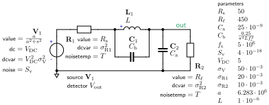

myPassiveNetwork
.param
+ R_s={50}
+ R_ell={450}
+ C_a={25n}
+ C_b={1/((2*pi*f_s)^2*L)}
+ f_s={5M}
+ S_v={4a}
+ V_DC={5}
+ sigma_V={0.05}
+ sigma_R1={0.02}
+ sigma_R2={0.01}
+ a={2M*pi}
+ L={1u}
.source V1
.detector V_out
C2 out 0 C value={C_a}
C1 2 out C value={C_b}
L1 2 out L value={L}
R2 out 0 R value={R_ell} dcvar={sigma_R2^2} noisetemp={T}
R1 2 1 R value={R_s} dcvar={sigma_R1^2} noisetemp={T}
V1 1 0 V value={a/(a^2+s^2)} dc={V_DC} dcvar={(sigma_V*V_DC)^2} noise={S_v}
.end
| RefDes | Nodes | Refs | Model | Param | Symbolic | Numeric |
|---|---|---|---|---|---|---|
| C1 | 2 out | C | value | $C_{b}$ | $1.013\cdot 10^{-9}$ | |
| vinit | $0$ | $0$ | ||||
| C2 | out 0 | C | value | $C_{a}$ | $25\cdot 10^{-9}$ | |
| vinit | $0$ | $0$ | ||||
| L1 | 2 out | L | value | $L$ | $1\cdot 10^{-6}$ | |
| iinit | $0$ | $0$ | ||||
| R1 | 2 1 | R | value | $R_{s}$ | $50$ | |
| dcvar | $\sigma_{R1}^{2}$ | $400\cdot 10^{-6}$ | ||||
| noisetemp | $T$ | $300$ | ||||
| noiseflow | $0$ | $0$ | ||||
| dcvarlot | $0$ | $0$ | ||||
| R2 | out 0 | R | value | $R_{\ell}$ | $450$ | |
| dcvar | $\sigma_{R2}^{2}$ | $100\cdot 10^{-6}$ | ||||
| noisetemp | $T$ | $300$ | ||||
| noiseflow | $0$ | $0$ | ||||
| dcvarlot | $0$ | $0$ | ||||
| V1 | 1 0 | V | value | $\frac{a}{a^{2} + s^{2}}$ | $\frac{6.283 \cdot 10^{6}}{s^{2} + 3.948 \cdot 10^{13}}$ | |
| dc | $V_{DC}$ | $5$ | ||||
| dcvar | $V_{DC}^{2} \sigma_{V}^{2}$ | $62.50\cdot 10^{-3}$ | ||||
| noise | $S_{v}$ | $4\cdot 10^{-18}$ |
| Name | Symbolic | Numeric |
|---|---|---|
| $C_{a}$ | $25\cdot 10^{-9}$ | $25\cdot 10^{-9}$ |
| $C_{b}$ | $\frac{0.25}{\pi^{2} L f_{s}^{2}}$ | $1.013\cdot 10^{-9}$ |
| $L$ | $1\cdot 10^{-6}$ | $1\cdot 10^{-6}$ |
| $R_{\ell}$ | $450$ | $450$ |
| $R_{s}$ | $50$ | $50$ |
| $S_{v}$ | $4\cdot 10^{-18}$ | $4\cdot 10^{-18}$ |
| $T$ | $300$ | $300$ |
| $V_{DC}$ | $5$ | $5$ |
| $a$ | $6.283\cdot 10^{6}$ | $6.283\cdot 10^{6}$ |
| $f_{s}$ | $5\cdot 10^{6}$ | $5\cdot 10^{6}$ |
| $\sigma_{R1}$ | $20\cdot 10^{-3}$ | $20\cdot 10^{-3}$ |
| $\sigma_{R2}$ | $10\cdot 10^{-3}$ | $10\cdot 10^{-3}$ |
| $\sigma_{V}$ | $50\cdot 10^{-3}$ | $50\cdot 10^{-3}$ |
Go to myPassiveNetwork_index
SLiCAP: Symbolic Linear Circuit Analysis Program, Version 6.0 © 2009-2025 SLiCAP development team
For documentation, examples, support, updates and courses please visit: analog-electronics.tudelft.nl
Last project update: 2026-09-21 23:38:10